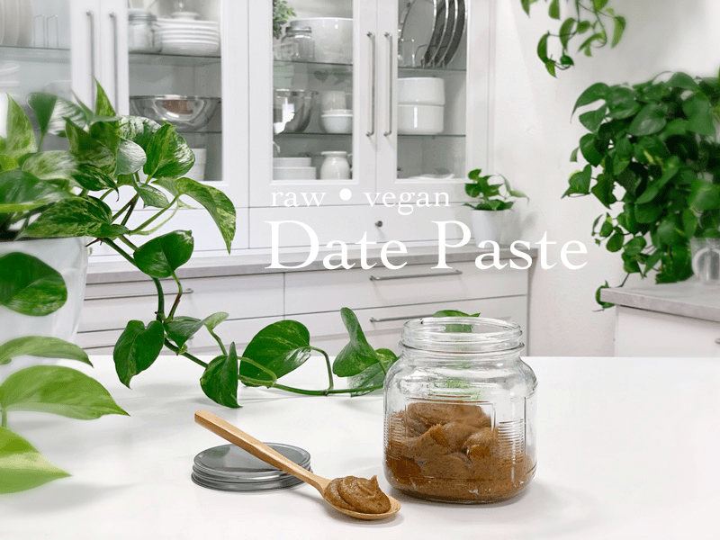
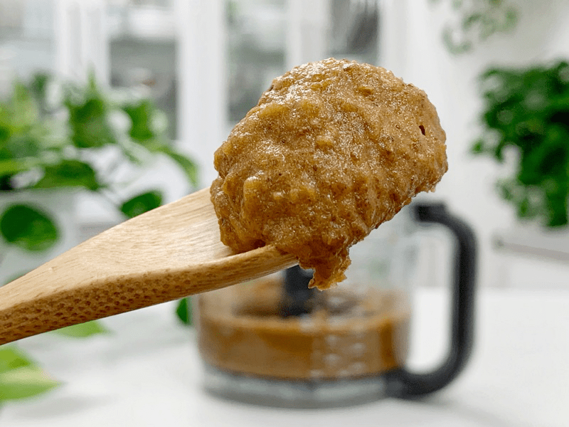
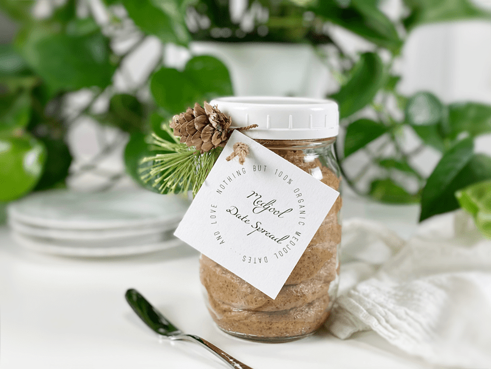

Date Paste
~ raw, vegan, gluten-free, nut-free ~
Date Paste is a wonderful natural sweetener and alternative to regular table sugar and even agave due to its fiber content and other nutritional values. Date paste is an alluring sweetener with all the qualities of sugar without any loss of flavor and other sensory characteristics. Did you know that a date fruit has 25% more potassium than bananas while being free of fats, sodium, and cholesterol?

You can use date paste as a sweetener in raw cookies, smoothies, as a spread, etc. When a recipe calls for dates, it can be a good idea to get in the habit of making date paste. Dates come in various sizes which don’t give you accurate measuring, but once you process your dates into a paste, you can then be sure you have exact measurements. If you plan on using date paste as a substitute for Agave, you will need to use about 50% extra compared to agave nectar.

If you are looking for a quick and easy gift idea… How about packing it up in a glass jar and gift it alongside a loaf of bread or a bag of fresh organic apples?

Making a batch and keeping it in the fridge makes it really convenient when needing a sweetener on the stop. It will keep for 2-4 weeks in the refrigerator. Be sure to date your container as to when you made it, so you know the approximate expiration date. I use masking take and a black Sharpie. Blessings, amie sue
 Ingredients:
Ingredients:
Yields 2 1/4 cups
- 2 cups (350 g) packed, Medjool dates, re-hydrated
- 1/4 tsp (2 g) Himalayan pink salt
- Add a squeeze of lemon juice to help preserve freshness
Preparation:
- Remove the pits from the dates and inspect them
- Anytime you using dates you need to check the inside of each date for any eggs that bugs may have laid. It’s rare, but it can happen.
- I always pull my dates into two pieces and check the inside, and I have come across a few with small eggs in them, and a few that had a black powdery substance that I am guessing was a type of mold. Don’t let this gross you out, it just part of nature.
- As you pit the dates, create a pile of the pits and a pile of the dates. Don’t automatically toss into the blender or food processor. Once done, double search through the pitted dates to make sure that you didn’t accidentally toss a pit in that direction. It’s easy to do as it is a mindless activity. This will prevent accidental pits from getting into your recipe and ruining it.
- Soak the dates in enough warm water to cover them. Allow them to soak for at least 15 minutes, just long enough to help soften them.
- Once done soaking, drain the water and hand-squeeze the excess water from them.
- In a high-powered blender or food processor, combine ingredients and blend until completely smooth.
- If needed, you can add small amounts of water if you want to create a thinner paste.
- Another version that doesn’t require a blender or food processor is simply mashing the dates up by hand or with a mortar and pestle, no soaking, no adding water.
- Will keep 2-4 weeks in the fridge.
- Make your Date Paste in bulk freeze it for up to 3 months.
- Store in a ziplock bag, press all the air out of the bag, seal it, and lay it flat, spreading it out into a sheet.
- This is an excellent way to get your kitchen raw food ready. The more food prep you do in advance, the better you eat!
© AmieSue.com